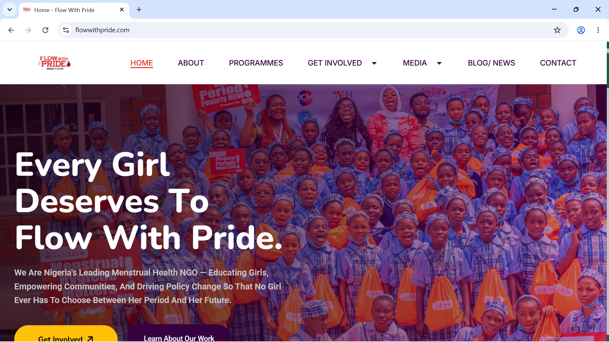
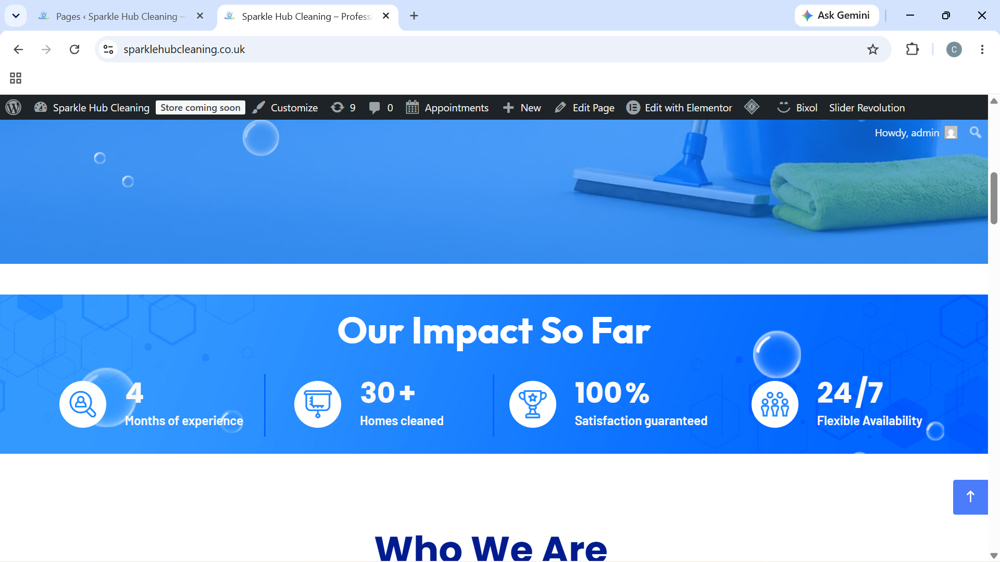

Available for websites, redesigns, and WordPress builds
Web developer / WordPress specialist
I build polished, responsive websites for brands and organizations.
I help ideas become clean, functional, public-ready web experiences with thoughtful structure, modern layouts, and a strong focus on usability.
$ npm run build
Compiled successfully.
const developer = {
name: "Clara Ojobo",
focus: ["WordPress", "React", "Next.js", "APIs"],
values: ["speed", "clarity", "accessibility"]
}
deploy("production")
Portfolio ready.My projects
Selected work with real purpose behind the build.

Featured project / WordPress NGO website
Flow With Pride
Created a WordPress website for Flow With Pride, an NGO focused on menstrual health advocacy, education, community empowerment, and policy change. The website strengthened the organization's public presence by clearly presenting its mission, programmes, media, blog/news updates, and contact information.- Role
- Website design and WordPress build
- Goal
- Make the NGO's mission, programmes, and updates easier to discover.
- Impact
- The improved digital presence helped support Flow With Pride Impact Hub's growing credibility, including its Special Accreditation to the 2026 UN Water Conference in Abu Dhabi, United Arab Emirates.

WordPress business website / Cleaning services
Sparkle Hub Cleaning
Built a WordPress website for Sparkle Hub Cleaning, a residential, healthcare, and commercial cleaning company serving Manchester and London. The site presents the full range of services, an online quote and booking flow, testimonials, and contact details in a clean, conversion-focused layout.- Role
- Website design and WordPress build
- Goal
- Give a local cleaning business a professional online presence that turns visitors into booked jobs.
- Impact
- Clear service pages and a simple "Get a Quote" / "Book a Service" flow made it easy for prospective clients to understand offerings and take action.
Technical stack
Tools I use to ship stable, maintainable products.
HTML
CSS
JavaScript
React
Next.js
REST APIs
Python
PostgreSQL
WordPress
Elementor
Git
Vercel
Workflow
Clear communication, careful builds, smooth handoff.
Scope
Define goals, user flows, technical requirements, and the smallest useful release.
Build
Develop responsive interfaces, connect data, test core paths, and keep progress visible.
Launch
Polish performance, accessibility, analytics, deployment, docs, and post-launch support.
Available for select projects
Need a developer who can bridge design and production?
Tell me what you are building, where it stands now, and what needs to happen next.